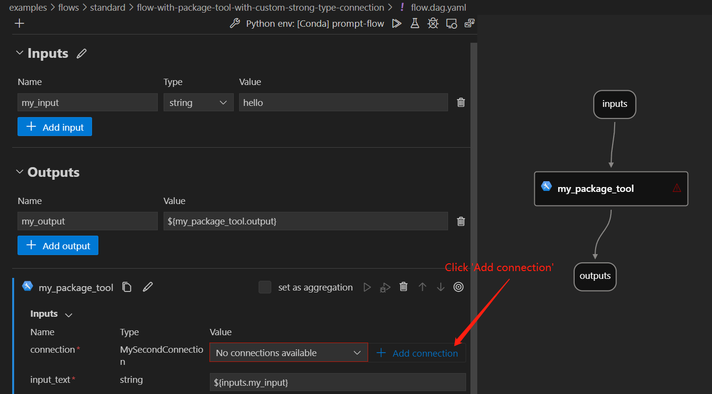
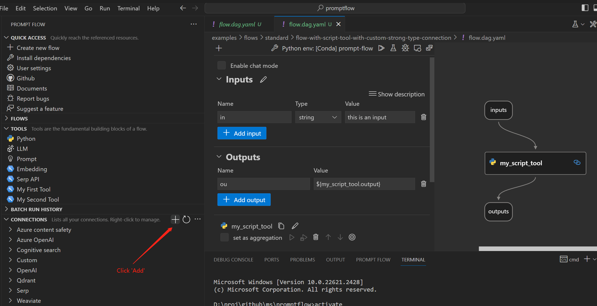
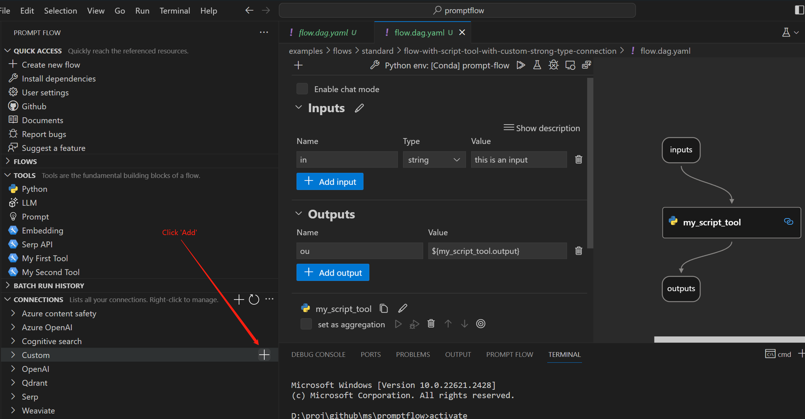
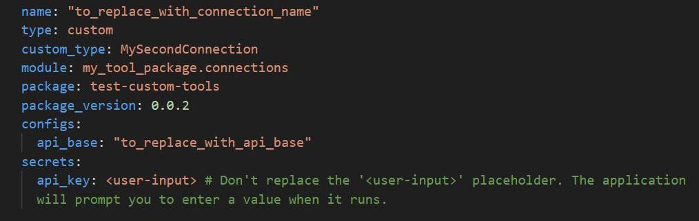
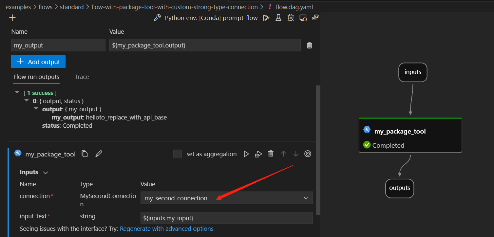
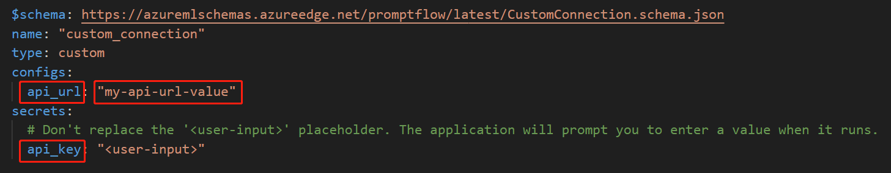
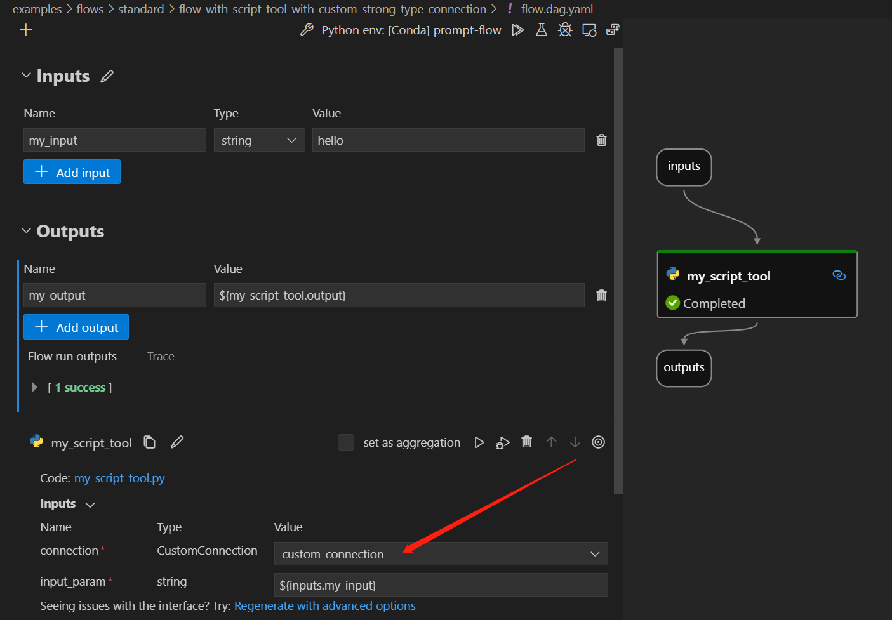

Create and Use Your Own Custom Strong Type Connection#
Connections provide a secure method for managing credentials for external APIs and data sources in prompt flow. This guide explains how to create and use a custom strong type connection.
What is a Custom Strong Type Connection?#
A custom strong type connection in prompt flow allows you to define a custom connection class with strongly typed keys. This provides the following benefits:
Enhanced user experience - no need to manually enter connection keys.
Rich intellisense experience - defining key types enables real-time suggestions and auto-completion of available keys as you work in VS Code.
Central location to view available keys and data types.
For other connections types, please refer to Connections.
Prerequisites#
Please ensure that your Prompt flow for VS Code is updated to at least version 1.2.1.
Please install promptflow package and ensure that its version is 0.1.0b8 or later.
pip install promptflow>=0.1.0b8
Create a custom strong type connection#
Follow these steps to create a custom strong type connection:
Define a Python class inheriting from
CustomStrongTypeConnection.
[!Note] Please avoid using the
CustomStrongTypeConnectionclass directly.
Use the Secret type to indicate secure keys. This enhances security by scrubbing secret keys.
Document with docstrings explaining each key.
For example:
from promptflow.connections import CustomStrongTypeConnection
from promptflow.contracts.types import Secret
class MyCustomConnection(CustomStrongTypeConnection):
"""My custom strong type connection.
:param api_key: The api key.
:type api_key: Secret
:param api_base: The api base.
:type api_base: String
"""
api_key: Secret
api_base: str = "This is a fake api base."
See this example for a complete implementation.
Use the connection in a flow#
Once you create a custom strong type connection, here are two ways to use it in your flows:
With Package Tools:#
Refer to the Create and Use Tool Package to build and install your tool package containing the connection.
Develop a flow with custom tools. Please take this folder as an example.
Create a custom strong type connection using one of the following methods:
If the connection type hasn’t been created previously, click the ‘Add connection’ button to create the connection. 
Click the ‘Create connection’ plus sign in the CONNECTIONS section. 
Click ‘Create connection’ plus sign in the Custom category. 
Fill in the
valuesstarting withto-replace-within the connection template. Run the flow with the created custom strong type connection. 
With Script Tools:#
Develop a flow with python script tools. Please take this folder as an example.
Create a
CustomConnection. Fill in thekeysandvaluesin the connection template. Run the flow with the created custom connection. 
Local to cloud#
When creating the necessary connections in Azure AI, you will need to create a CustomConnection. In the node interface of your flow, this connection will be displayed as the CustomConnection type.
Please refer to Run prompt flow in Azure AI for more details.
Here is an example command:
pfazure run create --subscription 96aede12-2f73-41cb-b983-6d11a904839b -g promptflow -w my-pf-eus --flow D:\proj\github\ms\promptflow\examples\flows\standard\flow-with-package-tool-using-custom-strong-type-connection --data D:\proj\github\ms\promptflow\examples\flows\standard\flow-with-package-tool-using-custom-strong-type-connection\data.jsonl --runtime test-compute
FAQs#
I followed the steps to create a custom strong type connection, but it’s not showing up. What could be the issue?#
Once the new tool package is installed in your local environment, a window reload is necessary. This action ensures that the new tools and custom strong type connections become visible and accessible.